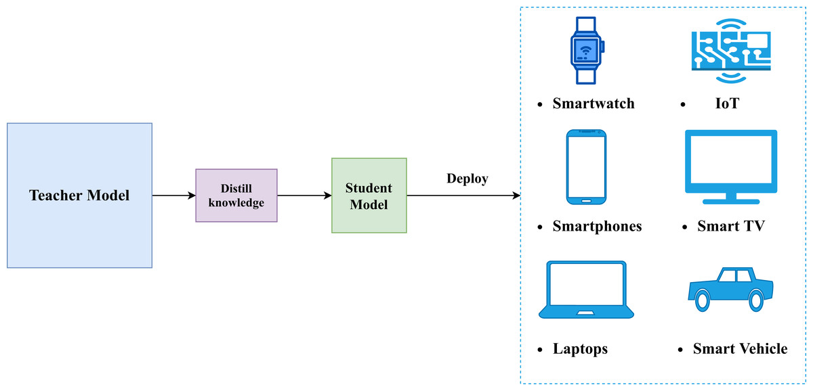
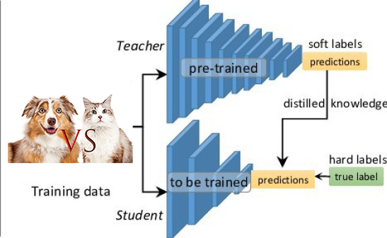
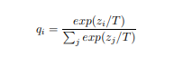
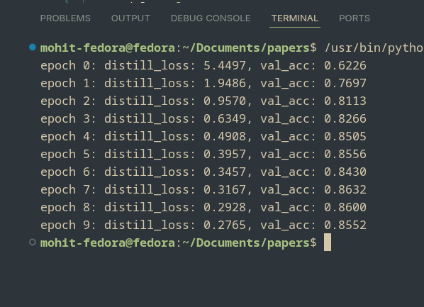

Distilling the Knowledge in a Neural Network
Knowledge distillation is one of those ideas in machine learning that sounds simple, but completely changes how you think about supervision. Instead of training models only on hard labels, it asks a different question: what if we train models to copy how another model thinks? In this blog, I walk through implementing the distillation paper end to end and what actually happens when a student model learns purely from a teacher’s outputs.
Knowledge distillation was introduced as a way to transfer information from one neural network to another without copying weights or architectures. Instead of treating supervision as a fixed set of labels, it reframes learning as imitation: a student model learns by matching the output behavior of a teacher model that already generalizes well. This idea has since become a core technique for model compression and efficient deployment.

In this implementation, The teacher model is trained exactly the way most image classifiers are trained: it sees an image, compares its prediction with the ground-truth label, and updates its weights to reduce classification error. Over time, it learns useful visual features and class boundaries, eventually reaching around 87% validation accuracy on CIFAR-10. At this point, the teacher has learned a reasonable way to generalize from the data.
Once training is complete, the teacher is frozen and no longer updated. This step is important because it turns the teacher into a stable reference point. Instead of continuously changing during training, the teacher provides consistent outputs for every input image, allowing the student to learn a fixed notion of “how to think” about the task rather than chasing a moving target.
Crucially, the teacher does not supervise the student using hard class labels. Instead, it provides its raw outputs (logits), which are later softened using temperature-scaled softmax.
These softened outputs encode relationships between classes
for example, how similar a “cat” image is to “dog” versus “airplane”, and this structure becomes the knowledge that is distilled into the student model.

The student model’s task is fundamentally different from the teacher’s. Instead of learning from ground-truth labels, the student learns purely by imitation. For every input image, it tries to produce output distributions that match those of the frozen teacher, effectively learning the teacher’s way of generalizing rather than rediscovering the task from scratch.
To make this imitation meaningful, the teacher’s logits are passed through a softmax with temperature. Increasing the temperature smooths the output distribution,
preventing it from collapsing into a single dominant class. This exposes information about class similarities and uncertainty
for example, whether an image of a cat is closer to a dog than to a truck — which would be completely lost with hard labels.

The student is trained by minimizing the difference between its output distribution and the teacher’s softened output using a KL-divergence loss. Importantly, during this entire process the student never sees CIFAR-10 labels. The only supervision comes from the teacher’s behavior, yet the student still converges quickly, with distillation loss dropping steadily and validation accuracy reaching around 85–86% within just 10 epochs.

What’s striking here is not just the final accuracy, but how fast the student learns. Compared to standard supervised training, the gradients provided by the teacher’s soft outputs are denser and more informative, allowing the student to pick up useful structure early on. This is the core advantage of knowledge distillation: the student is not just told what is right or wrong, but is guided toward making the right kinds of mistakes.
In practice, this is exactly how many machine learning systems are deployed. Large models are trained offline where compute is cheap and time is not critical, and their knowledge is then distilled into smaller models that are fast enough for production. These distilled models are easier to deploy on web servers, mobile devices, or edge hardware, while still retaining most of the performance of the original model.
What this experiment really shows is that much of what we call “learning” in neural networks is already encoded in the behavior of a trained model. Labels are just one way to guide learning, but they are not the only one, and often not the richest. By distilling knowledge from a teacher into a student, we shift the focus from memorizing answers to inheriting reasoning patterns, which is why this idea continues to sit at the core of modern, efficient machine learning systems.